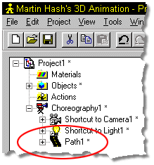
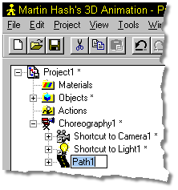
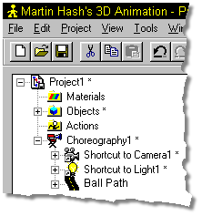

Each path must have a unique name. The path name is shown in the Project
Workspace. Initially the default path name is "Path1". Multiple default path
names will have numbers appended. If you type in a name that already exists, a
warning message will appear, "Name Already Used", and you will be given to
opportunity to rename the path.
Each path must have a unique name. The path name is shown in the Project
Workspace. Initially the default path name is "Path1". Multiple default path
names will have numbers appended. If you type in a name that already exists, a
warning message will appear, "Name Already Used", and you will be given to
opportunity to rename the path.
To change the name of a path, click the name in the Project Workspace to select it (it will highlight).

Press the F2 key to Edit the name.

Type in a name for the path and press Enter.

Related Topics:
About Directing
Selecting a Path
Smooth/Peaked Points in Paths
Add Object to Choreography
Add Object to Path